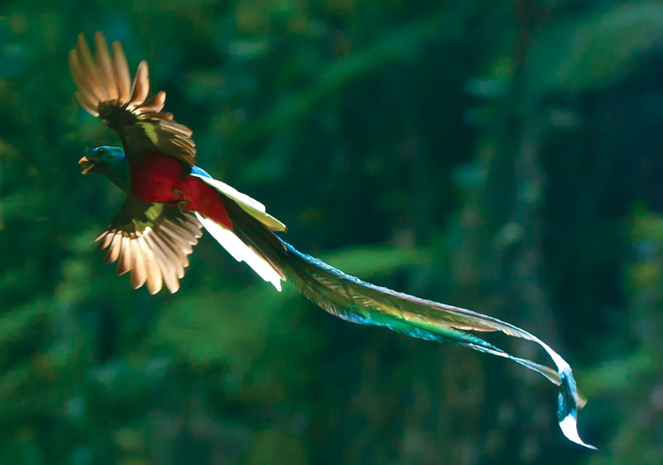
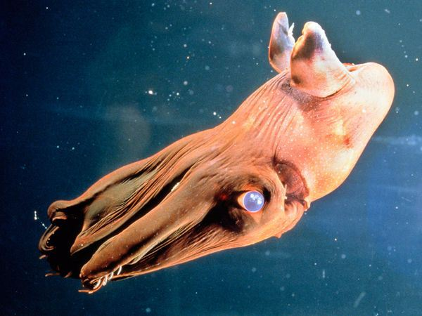

Quetzal are found in forests and woodlands, especially in humid highlands, with the five species from the genus Pharomachrus being exclusively Neotropical, while the single Euptilotis species is found in Mexico and very locally in southern United States
The blackbuck, also known as the Indian antelope, is an antelope found in Pakistan, India and Nepal. The blackbuck is the sole extant member of the genus Antilope. The species was described and given its binomial name by Swedish zoologist Carl Linnaeus in 1758.
The golden pheasant or Chinese pheasant (Chrysolophus pictus) is a gamebird of the order Galliformes (gallinaceous birds) and the family Phasianidae (pheasants). It is native to forests in mountainous areas of western China.
The greater bird-of-paradise (Paradisaea apoda) is a bird-of-paradise in the genus Paradisaea. The greater bird-of-paradise is the largest member in the genus Paradisaea, with males measuring up to 43 cm (17 in) (excluding the long twin tail wires). The female is smaller, at only 35 cm (14 in).

The vampire squid is a small, deep-sea cephalopod found throughout the temperate and tropical oceans of the world. Unique retractile sensory filaments justify the vampire squid's placement in its own order: Vampyromorphida.
The rainbow lorikeet (Trichoglossus moluccanus) is a species of parrot found in Australia. It is common along the eastern seaboard, from northern Queensland to South Australia and Tasmania. Its habitat is rainforest, coastal bush and woodland areas
A genet is a member of the genus Genetta, which consists of 14 to 17 species of small African carnivorans. Genet fossils from the Pliocene have been found in Morocco. The common genet is the only genet present in Europe and occurs in the Iberian Peninsula and France.
The lined butterflyfish is a butterflyfish (family Chaetodontidae), one of the largest species in the genus Chaetodon. They have a wide range from the Red Sea to South Africa and as far east as southern Japan and Hawaii.